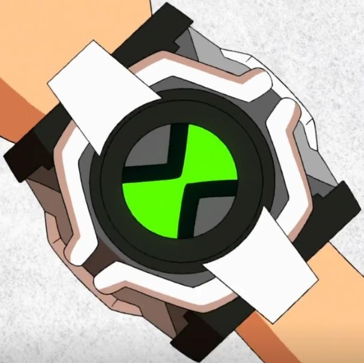
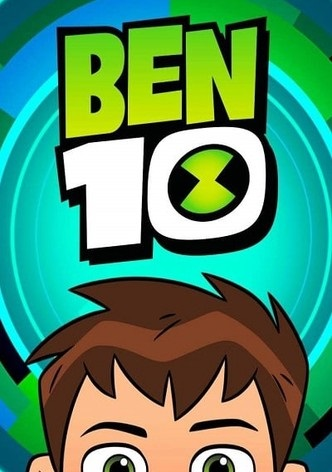

ALIENÍGENAS DEL OMNITRIX DEL REBOOT
Este omnitrix fue lanzado con el mismo propósito del original, pero con la diferencia que este era mucho más inestable y tenía varias actualizaciones que desbloqueaban aliens a cambio de otros viejos, también existía una especie de llave que le daba a los aliens una armadura que solo servía para darles la capacidad de volar y por último se le podia modificar con tecnología humana.

OVERFLOW
Overflow es el alienígena de Ben 10 que es de la especie cascan que vienen del planeta Cascareau, este mundo es puramente acuático y con burbujas que pasan su atmósfera, teniendo toda una civilización bajo el agua. Esta especie tiene la particularidad de ser en su mayoría piratas viviendo puramente de encontrar tesoros enterrados. Sus habilidades son poder disparar agua la cual controlan su dirección para usarla como medio de transporte o como arma.
APARECE EN:

SHOCK ROCK
Shock Rock es de la especie fulimini del planeta Fulmas el cual es un mundo totalmente vacío a excepción de su gente y toda la energía suelta en este. Sus habitantes son unos conquistadores los cuales utilizan su poder de control de la energía que tienen para crear armas y portales para conquistar más fácilmente las especies.
APARECE EN:
SLAPBACK
Ben 10 llamó a este alien así porque su especie los ekoplektoides del planeta Ekoplekton tienen la habilidad de que cada vez que reciban daño no les pase nada, pero que se multiplican y se vuelven más pequeños y pesados cada vez. Esta especie también son fuertes, pesados y resistentes esto les ayudo a crear edificios y transportes capaces de soportar el peso de cada individuo y sus copias.
APARECE EN:
GAX
Ben 10 desbloquea a Gax de manera extraña sin saber que este es un chimera sui géneris proveniente del planeta Vilgaxia siendo este alien la misma especie que Vilgax el conquistador de mundos. Este alien tiene super fuerza, una gran resistencia puede desarmar sus brazos de tentáculos para usarlos y puede disparar rayos por sus ojos a gran potencia.
APARECE EN:
SURGE
Surge es un alien cuya especie son los xerges de un planeta desconocido. Este alien por sí solo no puede hacer nada literalmente, ni siquiera moverse eso es porque este ejemplar es el núcleo y cuando se junta con muchos otros puede hacer cualquier cosa pudiendo incluso transformarse en un ser gigante o reconstruir toda una civilización humana.